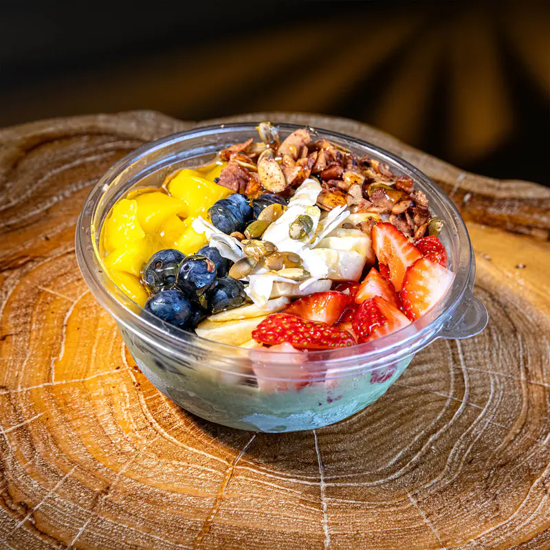

Cinnamon and caramelized apple
Fall topping, seen from above: cinnamon over foam and caramelized apple slices.

Premium coffee and ceremonial-grade matcha, handcrafted daily.
Rochester Hills · Troy · Rochester
Kiki Kafé is a top-rated premium café on M-59 at The Mall at Partridge Creek, the same highway that runs through Rochester Hills. Guests from Rochester Hills, Troy and Rochester come for a seasonal drink list that changes each fall, a full ceremonial-grade matcha menu, and a room made for staying, open until 9 PM on weekends.
Planning an event in Oakland County? The Kiki Kart brings the full barista experience to you.
Oakland County is also home to a large remote workforce. 20.2% of Oakland County workers work from home, against 13.4% in Macomb County: 131,716 people in all (American Community Survey 2020–2024 5-year estimates). Rochester Hills, Troy and Rochester each sit above 22%.

The route
Every route below uses M-59. In Oakland County, M-59 runs through Pontiac and Rochester Hills. In Macomb County it becomes Hall Road and runs through Utica, Sterling Heights, Macomb Township and Clinton Township, where The Mall at Partridge Creek sits. The table names roads instead of minutes, because drive time on M-59 changes with traffic.
| Starting in | Route to Kiki Kafé | City site |
|---|---|---|
| Rochester Hills | M-59 east; it becomes Hall Road in Macomb County | rochesterhills.org |
| Rochester | South to M-59, then east to Hall Road | rochestermi.org |
| Troy | North to M-59, then east to Hall Road | troymi.gov |
| Pontiac | M-59 east through Rochester Hills | — |
| Utica (Macomb) | Hall Road east | cityofutica.org |
| Sterling Heights (Macomb) | Hall Road east | sterlingheights.gov |
Route facts: OpenStreetMap, where M-59 is mapped through Pontiac and Rochester Hills and as Hall Road in Utica, Sterling Heights, Macomb Township and Clinton Township. Macomb Township: macomb-mi.gov.
Fall 2026
Kiki announced on August 31, 2026 that the fall menu would drop the next day. On September 1 it launched six drinks. The names come straight from Kiki's menu card.
| Drink | What it is |
|---|---|
| Pumpkin kloud latte | Iced latte under a pumpkin foam top. |
| PPL refresher | Iced fruit refresher with a red fruit swirl. |
| Pumpkin kloud chai | Iced chai with a pumpkin foam top and caramel drizzle. |
| Pumpkin kream cold brew | Cold brew capped with pumpkin cream. |
| Caramelized apple matcha | Kiki's fall matcha, layered over milk with a foam top. |
| Pumpkin spice draft latte | Draft latte with pumpkin spice and a foam top. |

More from Kiki's September 2026 photo shoot:
Fall topping, seen from above: cinnamon over foam and caramelized apple slices.
An iced latte with cinnamon foam and a honey pour.
Matcha under strawberry cream, finished with fresh fruit.
Coming from Oakland County? Order on DoorDash for pickup and your drink is ready when you reach Hall Road.
Order on DoorDashworth the drive
Ceremonial-grade matcha, caramelized apple and cinnamon. East on M-59, at The Mall at Partridge Creek.
Matcha
Matcha gets its own section on Kiki's menu. Kiki describes it as ceremonial-grade green tea, made iced or hot. You can order it straight, over milk, layered under strawberry cream, or as the caramelized apple matcha on the fall menu. There is also a matcha açaí bowl, finished with fresh fruit and granola.
Order ahead on DoorDash for pickup, and your matcha is ready when you arrive at Partridge Creek.

The bar
Kiki grinds coffee at the bar and pulls each shot to order. The Kiki Kart brings its own espresso bar and nitro taps to events, and draft lattes such as the pumpkin spice draft latte pour from a tap.
Guests name their favorites in Google reviews: the Kiki special hot latte, the iced brown sugar shaken espresso, the oat milk brown butter draft latte and the caramelized banana latte.
Rochester Hills
M-59 runs straight through Rochester Hills, which makes it the easiest Oakland County trip to Kiki: head east and stay on M-59 until it becomes Hall Road in Macomb County. Rochester Hills has 77,089 residents, and 23.6% of its workers work from home, 8,896 people. Of the three Oakland County cities on this page, only Rochester has a higher remote-work share (27.2%).
Rochester Hills also has 6,654 college and graduate students. City events, parks and trails are on rochesterhills.org.
Source: American Community Survey 2020–2024 5-year estimates, B01003, B08301, B14001, B01001.
Troy
Troy is Oakland County's largest city, with 87,898 residents. It also has more people working from home than any other Oakland County community: 10,084, or 22.5% of its workers.
From Troy, go north to M-59, then east to Hall Road and Partridge Creek. Troy has 6,829 college and graduate students and an average commute of 23.7 minutes. City news, the farmers market and the library are on troymi.gov. The Kiki Kart takes requests for Troy offices and events through the request form.
Source: American Community Survey 2020–2024 5-year estimates, B01003, B08301, B14001, B01001.
Rochester
The City of Rochester is small, with 12,934 residents, but its workforce leans remote: 27.2% of Rochester workers work from home. From downtown Rochester, go south to M-59, then east to Hall Road.
Rochester and Rochester Hills share a name, but the Census counts them separately. Rochester has the highest work-from-home share of the three cities on this page. Rochester has 925 college and graduate students, and 21.7% of residents are aged 18 to 34.
Source: American Community Survey 2020–2024 5-year estimates, B01003, B08301, B14001, B01001.
Oakland County data
People who work from home drive weekday coffee shop traffic. The American Community Survey 2020–2024 5-year estimates count 131,716 Oakland County workers who work from home, 20.2% of 651,199 workers. The table ranks the 15 Oakland County communities with the most remote workers. Rochester Hills, Troy and Rochester are highlighted.
| # | Community | Residents | Work from home | College students | Avg commute |
|---|---|---|---|---|---|
| 1 | Troy | 87,898 | 10,084 (22.5%) | 6,829 | 23.7 min |
| 2 | Farmington Hills | 83,515 | 10,027 (22.8%) | 5,602 | 24.7 min |
| 3 | Royal Oak | 57,950 | 9,684 (27.4%) | 3,576 | 23.8 min |
| 4 | Rochester Hills | 77,089 | 8,896 (23.6%) | 6,654 | 24.3 min |
| 5 | Novi | 66,717 | 7,642 (22.8%) | 3,324 | 26.2 min |
| 6 | West Bloomfield Township | 65,816 | 7,001 (22.5%) | 3,852 | 27.8 min |
| 7 | Southfield | 76,236 | 6,110 (17.0%) | 4,915 | 23.7 min |
| 8 | Bloomfield Township | 44,097 | 5,677 (27.4%) | 2,099 | 24.1 min |
| 9 | Waterford Township | 70,160 | 4,778 (13.2%) | 2,813 | 27.1 min |
| 10 | Orion Township | 38,546 | 4,154 (20.5%) | 1,861 | 25.7 min |
| 11 | Commerce Township | 43,840 | 3,952 (17.4%) | 2,124 | 28.1 min |
| 12 | Ferndale | 19,190 | 3,706 (28.1%) | 1,194 | 23.2 min |
| 13 | Independence Township | 36,982 | 3,361 (18.2%) | 1,731 | 28.8 min |
| 14 | Oak Park | 29,318 | 3,351 (23.2%) | 1,554 | 23.3 min |
| 15 | Madison Heights | 28,419 | 3,007 (19.5%) | 1,378 | 25.3 min |
| … | Rochester | 12,934 | 1,871 (27.2%) | 925 | 24.9 min |
Source: American Community Survey 2020–2024 5-year estimates, tables B01003, B08301, B14001 and B08013. Average commute is aggregate travel time divided by workers who did not work from home. Estimates carry Census margins of error.
Ages 18 to 34
Matcha, cold brew and refreshers skew young. Across Oakland County, 273,832 residents are aged 18 to 34, 21.4% of the population. Among communities of 10,000 or more, the youngest are Ferndale (34.6%), Wixom (33.2%), Auburn Hills (33.1%) and Royal Oak (32.0%).
Source: American Community Survey 2020–2024 5-year estimates, table B01001 and B14001. Median age: B01002.
| # | Community | Aged 18–34 | Share | College students |
|---|---|---|---|---|
| 1 | Ferndale | 6,632 | 34.6% | 1,194 |
| 2 | Wixom | 5,736 | 33.2% | 935 |
| 3 | Auburn Hills | 8,307 | 33.1% | 2,838 |
| 4 | Royal Oak | 18,571 | 32.0% | 3,576 |
| 5 | Madison Heights | 8,299 | 29.2% | 1,378 |
| 6 | Clawson | 3,192 | 28.1% | 633 |
| 7 | Hazel Park | 4,042 | 27.0% | 491 |
| 8 | Oak Park | 7,490 | 25.5% | 1,554 |
| 9 | Pontiac | 15,829 | 25.5% | 3,070 |
| 10 | Farmington | 2,927 | 25.4% | 592 |
| 11 | Berkley | 3,837 | 25.3% | 687 |
| 12 | Southfield | 17,811 | 23.4% | 4,915 |
Two counties
Kiki Kafé serves guests from both counties. The table puts Oakland County and Macomb County side by side.
| Measure | Oakland County | Macomb County |
|---|---|---|
| Residents | 1,279,825 | 879,853 |
| Workers | 651,199 | 423,414 |
| Work from home | 131,716 (20.2%) | 56,713 (13.4%) |
| College and graduate students | 72,130 | 46,874 |
| Aged 18 to 34 | 273,832 (21.4%) | 190,732 (21.7%) |
| Average commute | 25.8 min | 26.3 min |
| High school students (grades 9–12) | 63,543 | 45,569 |
Source: American Community Survey 2020–2024 5-year estimates (county tables B01003, B08301, B14001, B01001, B08013).
Every community
The full list, largest first. Rochester Hills, Troy and Rochester are the Oakland County cities closest to M-59 and Kiki Kafé.
| Community | Residents | Work from home | Aged 18–34 | College students | Avg commute | Median age |
|---|---|---|---|---|---|---|
| Troy | 87,898 | 22.5% | 20.6% | 6,829 | 23.7 min | 42.0 |
| Farmington Hills | 83,515 | 22.8% | 23.0% | 5,602 | 24.7 min | 42.6 |
| Rochester Hills | 77,089 | 23.6% | 20.1% | 6,654 | 24.3 min | 41.0 |
| Southfield | 76,236 | 17.0% | 23.4% | 4,915 | 23.7 min | 42.3 |
| Waterford Township | 70,160 | 13.2% | 22.4% | 2,813 | 27.1 min | 42.9 |
| Novi | 66,717 | 22.8% | 18.4% | 3,324 | 26.2 min | 40.0 |
| West Bloomfield Township | 65,816 | 22.5% | 17.3% | 3,852 | 27.8 min | 46.1 |
| Pontiac | 62,104 | 4.8% | 25.5% | 3,070 | 21.2 min | 36.5 |
| Royal Oak | 57,950 | 27.4% | 32.0% | 3,576 | 23.8 min | 36.9 |
| Bloomfield Township | 44,097 | 27.4% | 12.1% | 2,099 | 24.1 min | 48.1 |
| Commerce Township | 43,840 | 17.4% | 17.3% | 2,124 | 28.1 min | 42.2 |
| Orion Township | 38,546 | 20.5% | 19.5% | 1,861 | 25.7 min | 41.9 |
| Independence Township | 36,982 | 18.2% | 20.4% | 1,731 | 28.8 min | 41.3 |
| White Lake Township | 31,046 | 13.4% | 18.5% | 1,137 | 31.6 min | 43.8 |
| Oak Park | 29,318 | 23.2% | 25.5% | 1,554 | 23.3 min | 38.1 |
| Madison Heights | 28,419 | 19.5% | 29.2% | 1,378 | 25.3 min | 39.0 |
| Auburn Hills | 25,105 | 18.6% | 33.1% | 2,838 | 22.1 min | 36.5 |
| Lyon Township | 24,933 | 19.6% | 17.4% | 1,091 | 29.9 min | 38.0 |
| Oxford Township | 22,593 | 18.5% | 18.9% | 1,152 | 30.3 min | 39.8 |
| Birmingham | 21,763 | 26.3% | 13.5% | 787 | 20.3 min | 41.8 |
| Oakland Township | 20,339 | 27.3% | 14.5% | 1,212 | 28.2 min | 42.9 |
| Highland Township | 19,704 | 15.7% | 17.7% | 769 | 34.5 min | 43.6 |
| Ferndale | 19,190 | 28.1% | 34.6% | 1,194 | 23.2 min | 37.3 |
| Wixom | 17,295 | 14.3% | 33.2% | 935 | 25.4 min | 35.5 |
| Milford Township | 17,129 | 21.7% | 16.5% | 802 | 30.1 min | 42.5 |
| Brandon Township | 15,440 | 20.2% | 16.8% | 367 | 32.8 min | 44.4 |
| Berkley | 15,149 | 22.6% | 25.3% | 687 | 22.0 min | 37.8 |
| Hazel Park | 14,963 | 14.9% | 27.0% | 491 | 24.6 min | 37.5 |
| Springfield Township | 14,784 | 14.8% | 18.5% | 723 | 30.6 min | 42.3 |
| Southfield Township | 14,758 | 28.7% | 10.3% | 595 | 23.4 min | 48.5 |
| Rochester | 12,934 | 27.2% | 21.7% | 925 | 24.9 min | 41.2 |
| Holly Township | 12,220 | 13.8% | 22.6% | 628 | 34.7 min | 40.9 |
| South Lyon | 11,950 | 16.2% | 20.5% | 661 | 31.7 min | 41.8 |
| Farmington | 11,504 | 25.5% | 25.4% | 592 | 23.1 min | 39.0 |
| Clawson | 11,374 | 22.1% | 28.1% | 633 | 22.3 min | 39.4 |
Source: American Community Survey 2020–2024 5-year estimates, tables B01003, B08301, B01001, B14001, B08013 and B01002.
Students
Students fill coffee shop tables on weeknights and weekends. Oakland County has 72,130 residents enrolled in college or graduate school (American Community Survey 2020–2024 5-year estimates). Troy and Rochester Hills rank near the top, and both sit on the M-59 side of the county, the route to Kiki Kafé. For a study session that runs late, Kiki stays open until 9 PM Friday to Sunday.
Source: American Community Survey 2020–2024 5-year estimates, table B14001 (college undergraduate plus graduate or professional school).
| # | Community | College students | Residents |
|---|---|---|---|
| 1 | Troy | 6,829 | 87,898 |
| 2 | Rochester Hills | 6,654 | 77,089 |
| 3 | Farmington Hills | 5,602 | 83,515 |
| 4 | Southfield | 4,915 | 76,236 |
| 5 | West Bloomfield Township | 3,852 | 65,816 |
| 6 | Royal Oak | 3,576 | 57,950 |
| 7 | Novi | 3,324 | 66,717 |
| 8 | Pontiac | 3,070 | 62,104 |
| 9 | Auburn Hills | 2,838 | 25,105 |
| 10 | Waterford Township | 2,813 | 70,160 |
| 11 | Commerce Township | 2,124 | 43,840 |
| 12 | Bloomfield Township | 2,099 | 44,097 |
Plan your visit
Kiki Kafé is a top-rated coffee shop with 280 Google reviews as of October 2, 2026. For the full menu, the caffeine guide and the room itself, see the Macomb County coffee shop page.
The M-59 corridor
M-59 crosses north Oakland County before it reaches Macomb. These communities sit on or near it.
62,104 residents; 25.5% aged 18 to 34. M-59 runs through Pontiac, then east through Rochester Hills toward Hall Road.
25,105 residents, 33.1% aged 18 to 34 and 2,838 college and graduate students.
38,546 residents; 4,154 work from home (20.5%).
20,339 residents; 27.3% of workers work from home, one of the highest shares in Oakland County.
Oakland County parks and park venues for events are listed by Oakland County Parks.
First visit
Start with what guests already name in Google reviews, then add the fall menu:
Order ahead on DoorDash for pickup so the drink is ready when you reach Hall Road from Rochester Hills, Troy or Rochester.
Events
The Kiki Kart is Kiki Kafé's mobile espresso bar. Send the event city, date, guest count and venue through the request form, and Kiki replies with availability and pricing within 2 to 3 business days. Read more on the Kiki Kart page.
For a park venue, Oakland County Parks lists locations across the county.
Reviews
★★★★★“Got the oat milk brown butter draft latte which was heavenly and the caramelized banana latte was sooo good.”
★★★★★“We tried the Kiki special hot latte, ice brown sugar shaken espresso, 3 of the refreshers and couldn't choose which one was my favorite.”
★★★★★“Was never a big fan of coffee, but Kiki has officially changed my mind. ... They have many drink options and desserts!!”
Questions
Kiki Kafé is at 17370 Hall Rd, Suite 107, inside The Mall at Partridge Creek. Take M-59 east from Rochester Hills; it becomes Hall Road. Order ahead on DoorDash for pickup.
Kiki Kafé serves ceremonial-grade matcha lattes, strawberry cream matcha and the caramelized apple matcha from the fall 2026 menu, on M-59 at The Mall at Partridge Creek.
Six drinks launched September 1, 2026: pumpkin kloud latte, PPL refresher, pumpkin kloud chai, pumpkin kream cold brew, caramelized apple matcha and pumpkin spice draft latte.
Kiki describes its matcha lattes as ceremonial-grade green tea, served iced or hot.
Kiki Kafé serves ceremonial-grade matcha lattes, strawberry cream matcha and a caramelized apple matcha at The Mall at Partridge Creek. From Troy, go north to M-59, then east to Hall Road.
A refresher is a fruit-forward iced cooler. Kiki's refreshers are caffeine-free. For an energy drink, order a Red Bull infusion instead.
Yes. Kiki serves açaí bowls topped with fresh fruit and granola. One version is a matcha açaí bowl.
Yes. Order on DoorDash for pickup, and the drink is ready when you arrive at Partridge Creek.
Yes. The Kiki Kart caters events across Oakland County. Send the event city, date, guest count and venue through the Kiki Kart request form, and Kiki replies with availability and pricing within 2 to 3 business days.
Yes. Kiki carries several non-dairy milks. Ask the barista for the current options.
Troy, with 10,084 residents who work from home (American Community Survey 2020–2024 5-year estimates). By share, communities such as Southfield Township, Ferndale, Royal Oak and Bloomfield Township lead at over 27%.
Yes. Kiki Kafé is open seven days a week. On Friday, Saturday and Sunday it opens at 10 AM and closes at 9 PM.
Kiki Kafé has 280 Google reviews as of October 2, 2026. Read them on Google.
Kiki Kafé wrote this page on October 2, 2026. Drink names come from Kiki's fall 2026 menu card and Instagram captions from August 31 and September 1, 2026. Demographic data comes from the U.S. Census Bureau. Route facts come from OpenStreetMap. Review quotes come from Google. No business paid to appear here.
17370 Hall Rd, Suite 107
The Mall at Partridge Creek
Clinton Township, MI 48038
(586) 300-6994